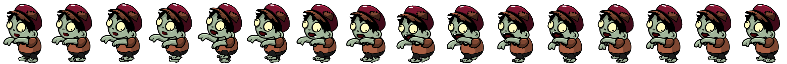

Sprite Spirit
Generator and SCSS Mixin that Brings Image Sprite to life.
Try Example
Save Image Sprite to your computer and drag it to the generator, or see a Demo on codepen.
Quick start using CDN:
https://unpkg.com/sprite-spirit@1.0.0/scss/sprite-spirit.scss
Using npm:
$ npm install sprite-spirit
Using bower:
$ bower install sprite-spirit
@include spriteSpirit('', '', , , , , , , );